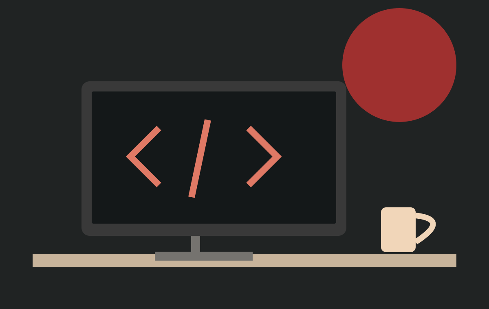
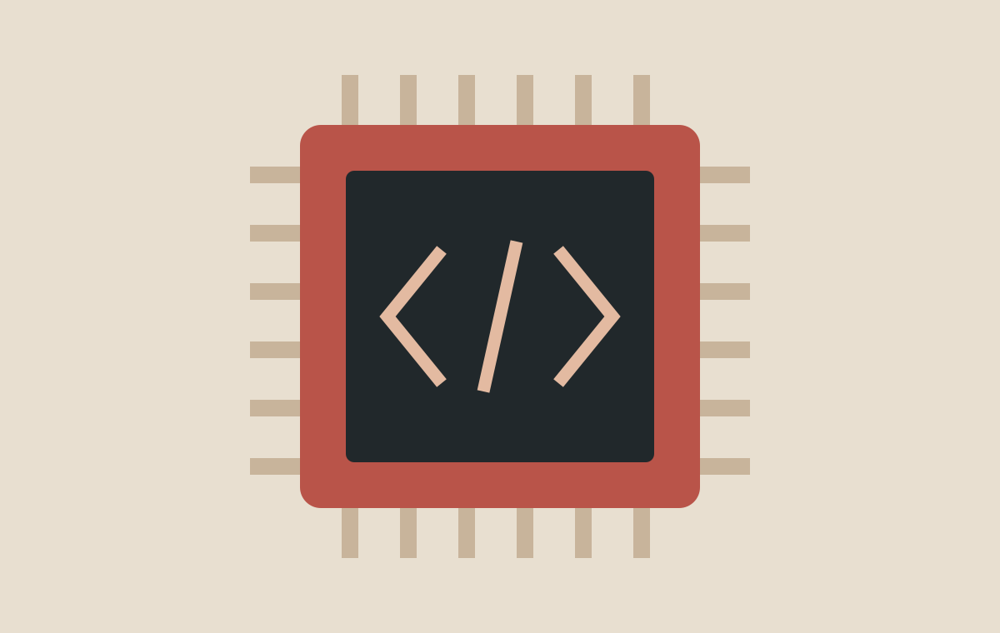
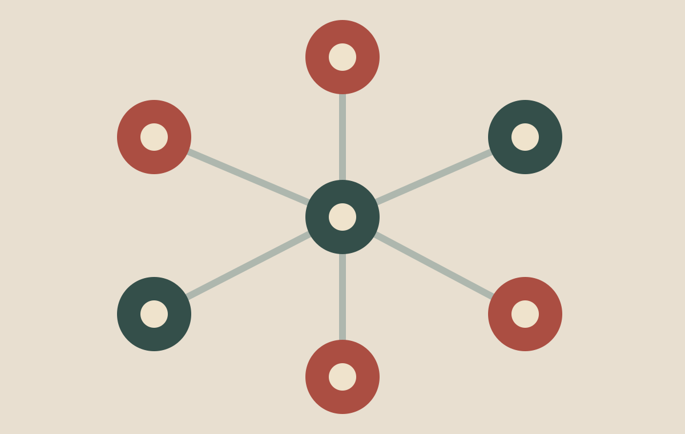

MeshPAY
A resilient payment project exploring how to record transactions during network outages and verify them after connectivity returns.
BACKEND / NETWORKS
COMPUTER SCIENCE / TAIPEI
A computer science student exploring software, networks, and ideas that solve everyday problems.
Explore my projects
01 / ABOUT ME
I’m Justin Cheng (鄭宸翔), a computer science student at National Taipei University of Technology. I enjoy understanding how systems work, from writing a program to running a service on my own server.
My interests include web development, artificial intelligence, and computer networks. Team projects and innovation competitions give me opportunities to turn what I learn into something people can try.
My goal: build useful software, and understand the decisions behind it.

02 / SELECTED PROJECTS
A resilient payment project exploring how to record transactions during network outages and verify them after connectivity returns.
BACKEND / NETWORKS
An educational life simulation that uses everyday choices to introduce financial planning, insurance, and risk.
GAME / EDUCATION
A travel website built with HTML and CSS, featuring a three-day itinerary, a budget table, and a hover gallery.
View my Tokyo website ↗HTML / CSS
03 / LEARNING PLAN
The skills I’m practicing and how I want to apply them.
| Area | Skill | Practice | Goal |
|---|---|---|---|
| Web Development | HTML & CSS | Layouts, tables, and hover effects | Build readable, responsive pages |
| Python & APIs | Backend services and data handling | Connect interfaces to useful services | |
| Computer Science | C++ & Data Structures | Course exercises and problem solving | Write clearer, more efficient programs |
| Networks & Linux | Home servers and deployment | Understand how services communicate | |
| Next Step | Bring these skills together in a complete, tested team project. | ||
04 / OUTSIDE THE CLASSROOM
Turning small ideas into working tools.

Learning by hosting my own services.
Exploring hardware and artificial intelligence.